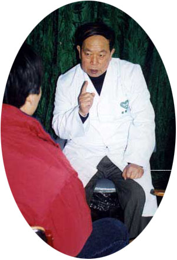

姚鑫山
姚鑫山老师对口吃的矫正具有相当的研究与丰富的临床经验，从1996年2月至2012年12月，历时近十七年，矫正了1395位口吃患者，有效率在95%以上。他曾担任过上海市中小学心理辅导协会副理事长，现任上海市中小学心理辅导专家委员会副主任。徐汇区教育学院高级教师，学科带头人。他在中小学心理辅导界享有盛名。1998年被上海市教委聘任为“上海市中小学心理健康教育讲师团”成员。他在心理辅导方面颇有研究成果。他主持研究并得到推广的《中小学生心理辅导研究》课题先后获上海市教育科研成果二等奖与优秀成果推广二等奖。主编与参与主编的主要著作有：《中学生心理辅导指南》、《开启心灵的钥匙》、《中学生心理辅导指南》丛书、《现代学校心理辅导》、《个别心理辅导》。1992年5月创建了徐汇区中小学生心理辅导室，并亲自坐堂门诊。1996 年在上海创办了上海市口吃矫正中心，1998年改名为上海市徐教口吃矫正站，现名姚老师口吃 矫正工作室。由于姚鑫山老师对心理辅导工作及矫正口吃的贡献2000年被评为上海市心理辅导突出贡献奖。 2005年1月被徐汇区民政局评为民办非企业单位个人先进；被徐汇区教育局评为社会力量办学单位先进个人。
姚鑫山老师是我国早期研究与实践心理辅导方面的资深望重专家。1996年，师从厦门大学心理学张燮教授，研究与探索口吃的 矫正方法，在徐汇区教育学院领导的支持下进行口吃矫正的实验，取得了成功。在矫正口吃的实践中又吸取了国内外口吃矫正的理论与实践，创造了自己独特的口吃矫正方法。他将世界上著名的心理辅导学派：精神分析、行为主义、认知主义、人本主义的理论综合起来运用于口吃矫正。将心理辅导与语言训练结合起来，进行口吃 矫正。2003年5月编写并公开出版了我国第一部运用心理学原理与特定 矫正口吃技术的专著——《口吃的心理治疗》，将自己多年矫正口吃的研究成果公开奉献给广大口吃患者。在矫正口吃的实践中发现有一些学员愈后有反复，他非常注重愈后的巩固，在预防反复与对待反复上有良好的措施。
姚鑫山老师在2006年5月26日与美国苏明尼达州立大学语言障碍系教授、国际口吃日（10月22日）网络会议主席朱迪.卡斯特进行学术交流，姚老师的 矫正方法得到该教授的充分肯定，认为他的理念是先进的。姚鑫山老师应卡斯特教授的邀请在当年国际网络会议上发表论文，受到了国际同仁的关注。2007年5月21日姚鑫山先生在600余名中外心理工作者参加的“中德心理治疗大会”上发表了《口吃心理治疗研究》一文并在会议上作专题演讲，获得了与会者的称赞。
下面是文本编辑方法示例
1.标题<h1>, <h2>, <h3>, <h4>, <h5>, <h6>
一级标题
一级标题
二级标题
二级标题
三级标题
三级标题
四级标题
四级标题
2.列表
<ul class="custom-list1">
<ul class="custom-list2">
<ul class="custom-list3">
<ul class="custom-list4">
<ul class="custom-list2">
<ul class="custom-list3">
<ul class="custom-list4">
- 第一行
- 第二行
- 第三行
- 第四行
- 第一行
- 第二行
- 第三行
- 第四行
- 第一行
- 第二行
- 第三行
- 第四行
- 第一行
- 第二行
- 第三行
- 第四行
3.引用<div class="quote"></div>
患上烦心的口吃，又误以为它是生理疾病，在用对付生理疾病的方法，理所当然地达不到效果时，就认为口吃是不治之症，完全丧失信心，这是口吃难以得到彻底矫正的内因。有人知道口吃以心理矫正效果最好，然而由于我国心理学的应用科学起步晚，还很不发达，掌握心理矫正口吃技术的更不多。口吃者误以为求医无门，这是口吃难以 得到彻底矫正的外因。
4.图片右对齐<img class="right-align-image">
图片左对齐<img class="left-align-image">
图片左对齐<img class="left-align-image">

口吃矫正专家姚鑫山，系上海市中小学心理辅导协会前副会长，现名誉理事，著名的心理辅导专家。他曾潜心研究心理学，出版过专著，还广拜名师，博采众长，学习钻研心理矫 正口吃技术，并吸取国内外先进心理咨询技术矫正口吃。他很强调内因诱导入手，又在外因上不断提高技术。在上海创办口吃矫正机构，十七年来的实践，截止2012年12月31日，共举办口吃矫正学习班百余期，共计学员1395人，其中男性1117名，女性278名；年龄最小的6岁，最大的71岁。除本市外，还有来自北京，河北，新疆，江苏，安徽，等全国多个省市的学员；除国内外，还有来自美国、日本、英国、新加坡等地的华人。
5.段落首字大写<div class="dropcap"></div>
学员有各种层次、各种职业：有政府官员、有专家教授、有解放军官兵、有医生、有护士、有教师、学生、有研究生、有白领、有打工者。经他矫正的1395名学员中，自我感觉 矫正效果显著的高达95%，创造了科技奇迹。 上海市的《解放日报》，《文汇报》，《新民晚报》，《大众卫生报》，《大众心理学》，上海有线电视台等媒体都先后作过多次报导。姚老师口吃矫正工作室（原名“上海市徐教口吃矫正站”）隶属于上海言畅文化传播中心（原上海徐汇区徐教进修学校），姚鑫山是该中心主任。该服务项目由民政局、教育局、税务局批准。收费经物价局核准。因此它具有合法性，可靠性。
6.文字左边栏<div class="quote-align-left"></div>
文字右边栏<div class="quote-align-right"></div>
文字右边栏<div class="quote-align-right"></div>
姚老师口吃矫正工作室（原名“上海市徐教口吃矫正站”）隶属于上海言畅文化传播中心（原上海徐汇区徐教进修学校），姚鑫山是该中心主任。该服务项目由民政局、教育局、税务局批准。收费经物价局核准。因此它具有合法性，可靠性。
口吃者在发生时口吃现象时，呼吸发生混乱。正常人讲话时呼吸和讲话协调得很好，讲话时胸中始终有气。气如果快要用尽时会自然而然地再吸一口气，这样讲话就能顺利地进行下去。但是口吃患者，说话时胸中没有气了，他不知道停下来吸 口气，而是拼命地继续往下讲，可是怎么也讲不出来。这时他的胸会感到闷，有的甚至感到胸部像一块铁一样硬，气流不流动了，话怎么能讲得出来呢？
姚老师口吃矫正工作室（原名“上海市徐教口吃矫正站”）隶属于上海言畅文化传播中心（原上海徐汇区徐教进修学校），姚鑫山是该中心主任。该服务项目由民政局、教育局、税务局批准。收费经物价局核准。因此它具有合法性，可靠性。
口吃者在发生时口吃现象时，呼吸发生混乱。正常人讲话时呼吸和讲话协调得很好，讲话时胸中始终有气。气如果快要用尽时会自然而然地再吸一口气，这样讲话就能顺利地进行下去。但是口吃患者，说话时胸中没有气了，他不知道停下来吸 口气，而是拼命地继续往下讲，可是怎么也讲不出来。这时他的胸会感到闷，有的甚至感到胸部像一块铁一样硬，气流不流动了，话怎么能讲得出来呢？
7.换行<div class="clear"></div>